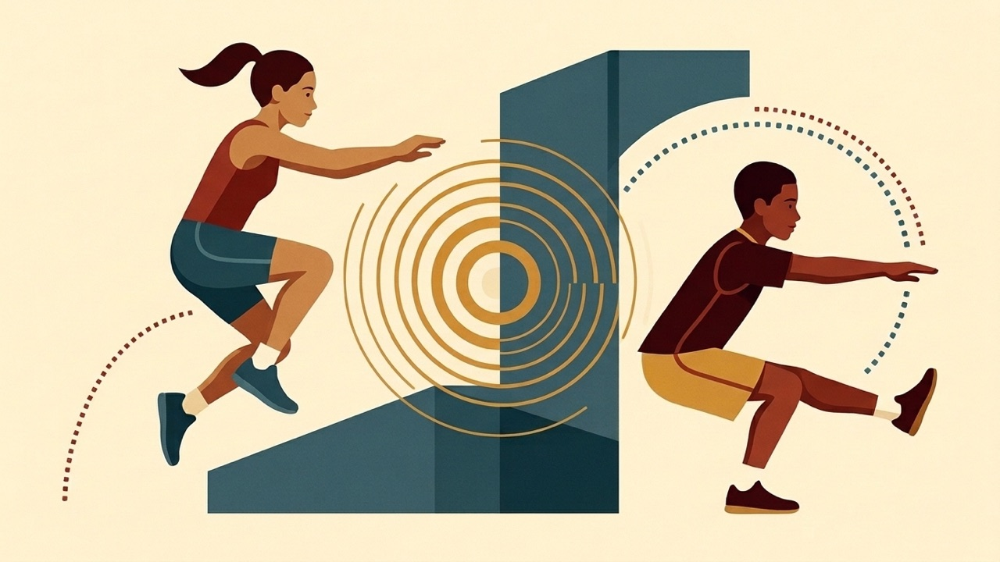

An Illustrated Guide · Ages 10 to 75+
Exercise by Age
The best workout changes as your physiology does. Banking bone density in adolescence, pushing peak HIIT in your twenties, and shifting toward sub-maximal strength and balance after 65 each unlock a different layer of lifelong resilience.
Stage 01 · Ages 10 to 18
Adolescent Foundations
Bank peak bone density and wire lifelong movement fluency.
Nearly 90% of adult bone mineral density is built before age 20. Rapid limb growth can temporarily disrupt coordination, making skill mastery, playful impact landings, and bodyweight control far more valuable than chasing heavy max lifts.
What to Emphasize
Smart Guardrails

Step 01 · Exercise Types
Recommended Training Mix for Ages 10–18
Every modality plays a distinct physiological role. Select any exercise type below to filter its specific exercises.
Step 02 · Specific Exercises & Physiology
Exercises & How They Improve Your Body
Hover or focus any exercise to light up its target systems on the anatomical atlas, or open the interactive walkthrough for step-by-step visuals.
Big Picture · Ages 10 to 75+
How Exercise Priorities Shift Over a Lifetime
Notice how aerobic base and strength stay essential across every decade—while HIIT peaks in athletic prime and balance rises to a daily cornerstone at 63+.
| Exercise Modality |
|---|